联邦篇：
RGM-89 杰刚
简介
本机是联邦军GM系列的发展型。以往GM系列的开发、生产都在联邦军基地进行，而这台机体是阿纳海姆电子公司制造的。运用长期积累的技术设计的GM系 MS“MSA-003 雷姆”，参加过格利普斯战役，获得了极高的评价。根据MSA-003 雷姆的设计思想制造的本机，具有非常值得信赖的优秀性能。其作为联邦军的主力机型投入了量产，并配备给了外围独立部队——朗德•贝尔队。由于本机的延展性、平衡性非常之好，所以在第二次新吉恩战争之后还进行了几次改修，到U.C.120年左右仍有本机型在使用。
概要
机体番号： RGM-89
机体代号(日文)： ジェガン 英文： Jegan 中文： 杰刚
出现作品： 逆袭的夏亚
机体类型： 泛用量产型MS
制造商： 阿纳海姆电子公司
所属： 联邦
初次配备：
技术参数
内部环境： 标准式全视野监控
尺寸： 头顶高：19.0米
全高：20.4米
重量： 本体重量：21.3吨
全备重量：47.3吨
装甲材料及结构： 钛合金（钛/陶瓷复合材料）可变式框架
发电机出力： 1870KW
推进力： 2×12700KG+2×9200KG+2×8800KG=61400KG
姿势制御喷嘴数:19
加速度： 1.03G
装备及设计特征： 传感器探测有效半径：14200米
固定武装： 光束军刀×1；3连装手雷夹×1；腰部3连装手榴弹
选用武装： 头部火神荚舱系统；专用盾牌（内藏2连装小型导弹发射器）
选用手部武器： 专用光束步枪
远程武器：
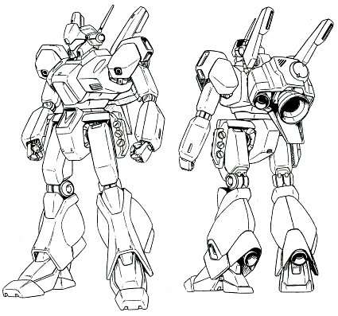
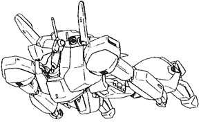
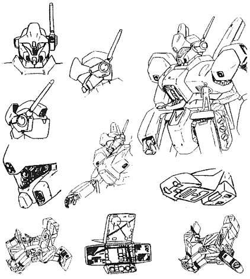
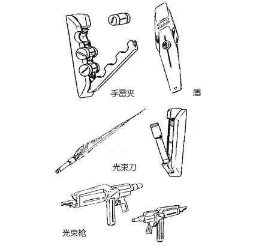
RGZ-91 灵格斯
简介
UC纪元八十年代后期，随着奥古与AE合作的“Z计划”的推进所开发出来的“MSZ-006 Z高达”的设计方案，使后来的MS开发工作受益匪浅。Z高达无论在空间战斗还是在重力下战斗中都有高等级的机体性能，而且在当时能进行大气圈突入的TMS （可变形机动战士）之中拥有首屈一指的攻击力。拥有非常复杂的变形机构的Z高达，MS和WR（冲浪者）两种形态都持有非常高的机体性能，它的出现使MS的使用范围得到了划时代的扩大。这部机体完成时，颠覆了当时的设计者的设计常识；由于构造材质的提高，才使其高效率的内部构造骨架得以实现，所以如果说之后大多数的MS使用的都是从开发Z高达途中派生出来的机构构造的话，一点也不过分。但是，与优秀的性能、战绩相反，Z高达并没有实现量产化……当然，在“Z 计划”的范畴以外，还是存在有能变形为航宙战斗机、称之为量产机、试作机的设计方案，并运用且消耗在侧面战斗之中……唯一由奥古的协力组织生产了少数的Z 直系改造机“Z PLUS”，但与真正意义上的量产来说，其规模还是过小。实际上，“Z PLUS”每台机体的武装式样都不一样，但即使是这样，世人还是将它们称之为Z高达量产型。在当时，流传着的王牌驾驶员的代名词就是“驾驶ZETA”，并流传了数年……以公正的观点来讲，Z高达的最大特征“变形”，正是Z高达不能实现量产的最大障碍之所在，所以，设计人员开始摸索将变形这一“机构”向“机能”方面转换的手法，换句话说，就是将从MS变到WR的变形机构省略掉，使WR形态时的机能用附加其他装备来代替的方法。
“RGZ-91 灵格斯”，就是由AE所开发的、将Z高达的MS形态复制过来的试作型MS，名称为“Refine·Gundam·ZETA”（精简Z高达）。其装备着将变形时的机能集于一体的附加装备BWS（Back·Weapon·System），用以代替WR形态时的机能。这个设计方案，与“Z计划”的称为R型的简易型Z高达的开发提案相接近，出发思想类似于RX-78高达的“G堡垒”形态时的“G装备”。不管怎样，这个经过数年才进行了实际制造的灵格斯，各部材都使用了最型的技术，再加上搭载有准塞可缪装置BIO-SYSTEM，达到了与原型Z高达相匹敌的机体性能。
格利普斯战役以后， “Z”系列的机体就开发的差不多了，这个系列作为高性能MS的代表得到了普遍的认同。灵格斯作为这个系谱的连带机种——特别是搭载了BWS以后，冲浪者形态时的运动性、长距离巡航性、搭载火力等都得到了高水平的发挥。应时势的需要，即将达成量产化。在第一次新吉恩战争之后，潜藏在各殖民地的反地球联邦军组织“エグム”、“NSP”所策划的小规模抵抗运动频发，联邦军为了守卫地球圈的平稳，将开发重点放在了次期主力机型上，这样，灵格斯的量产得以实现。
U.C.0092年12月22日，由夏亚·阿兹纳布所率领的新吉恩军队宣布占领甘泉，联邦军首脑将其作为紧急事态对待，因此，将原配备给外围新兴精锐部队“朗德·贝尔队”的高达系MS秘密隐藏起来。12月25日在联邦军高层的指示下将灵格斯初次配备于“朗德·贝尔队”。在第二次新吉恩战争中灵格斯与新吉恩军的NT专用MS“沙扎比”、“乍得·德卡”陷入了苦战，阿姆罗也深感此机性能与对方存在很大差距，这也意味着……灵格斯已是一台落后于时代的机体了，且有多名女性驾驶员于此机战死，因此同时又是一台悲哀的机体……
概要
机体番号： RGZ-91
机体代号(日文)： リ·ガズィ 英文： Re-GZ 中文： 灵格斯
出现作品： 逆袭的夏亚
机体类型： 泛用攻击型试作MS
制造商： 阿纳海姆电子公司
所属： 联邦
初次配备： U.C.0092
技术参数
内部环境： 全视野监控
尺寸： 头顶高：20.5米
全高：21.5米
重量： 本体重量：24.7吨
全备重量：55.2吨
装甲材料及结构： 高达尼姆合金（gundarium alloy）
发电机出力： 2550KW
推进力： 2×14200KG+4×11000KG+2×8600KG=67600KG
姿势制御喷嘴数：19
加速度： 1.62G
装备及设计特征： 传感器探测半径14200米；准塞可缪装置BIO-SYSTEM；背部武器系统BWS（Back·Weapon·System）
固定武装： 2连装榴弹发射器×2，收于前臂内；2连装榴弹发射器×2，收于侧面裙甲内；头部火神炮×2；3连装手榴弹夹×1，收于防护盾内
选用武装： 背部武器系统BWS（大型MEGA粒子炮×1；光束加农炮×2；导弹发射器）
选用手部武器： 光束步枪×1，额定输出功率3.8MW
远程武器：
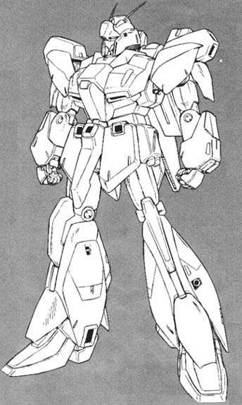
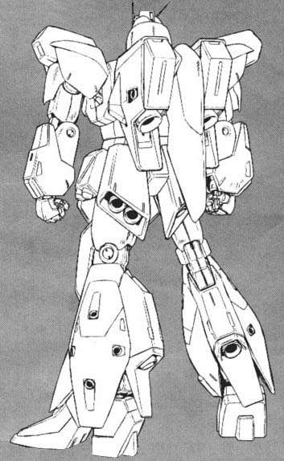
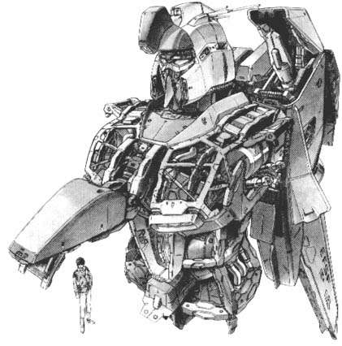
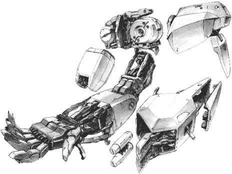
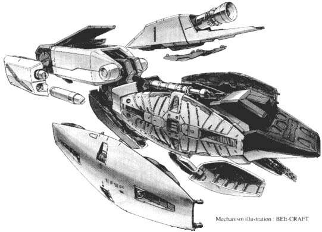
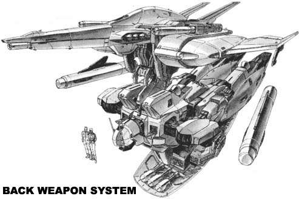
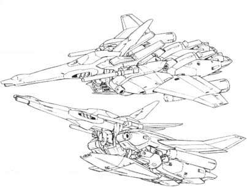
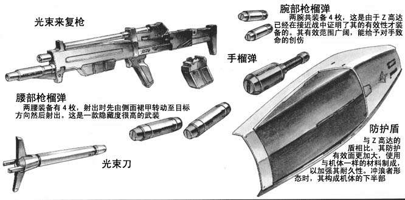
RX-93 ν高达
简介
历经泰坦斯和新吉恩两大动乱后，地球联邦虽然能取得最后的胜利，但所付出的代价无可估量。为了在休养生息期间避免新的敌对势力的出现，地球联邦军在各地驻扎和组建了许多战斗部队以维持威慑力，其中最为著名的便是由布莱德·诺亚上校任司令官，王牌机师阿姆罗·雷上尉为MS队指挥官的外围独立精锐部队——朗德·贝尔（Round Bell）。
各殖民地表面上虽然服从于联邦政府，但暗地里隐瞒了关于反联邦势力的情况，令本以搜寻新吉恩残党为目的而组建的朗德·贝尔一直徒劳无功。终于，由夏亚率领的新吉恩正式对地球联邦宣战。
联邦军为应付即将到来的战事需要，加强了朗德·贝尔的战斗配置，但另一方面却将其战斗力量限制在一定范围之内，以防其发生叛乱。虽然得到一批精良的军备补充，但出于应付日后战事的升级，朗德·贝尔提出将动乱后封存的以高达为主的各种高性能MS解封使用的要求，但联邦高层却因为上述理由加以否决，只是配置由Z计划发展出来的RGZ-91 利卡兹给予朗德·贝尔作为阿姆罗的指挥官用机使用。
虽然利卡兹继承了Z高达的多种优点以及改善了不少技术问题，但对比起同时代机体却存在很多不足之处，尤其是与新吉恩几台试作型机的交锋后，利卡兹根本无法令阿姆罗的能力发挥出来，从而造成了双方战斗力的差距。于是阿姆罗惟有委托月面企业阿纳海姆制造自行设计的新一代专用MS——RX-93 ν高达。
一直以来，高达在联邦军内都是作为一种王牌的象征。但对于阿姆罗来说，更多的是一种归属感，因为当年就是他驾驶着第一台高达第一次参与战斗而成名的，所以为自己量身订造的新型机自然便是高达，而且在机体外型上也充满着初代高达的影子。而从另外一个角度来看，阿姆罗也是面对来自夏亚的挑战而希望拥有能与其对抗的机体。
在机体结构上，阿姆罗参考了以前各高达的设计。由于从Z高达的可变式到由初代高达发展出来的ZZ高达的核心战斗机分离式结构都存在着不同程度的问题，所以阿姆罗决定放弃自己一贯熟悉的分离结构而重新使用一体化结构，并且出于对形势的预测，也果断地放弃了部分泛用的特性，以便针对宇宙战更加发挥机体性能。基本上就是在类人型金属骨架外表铺设高达尼姆合金装甲，各调节喷嘴的设置与之前的高达系列是类似的，而且推进器仍然是传统的背包式。但在涂装上却一反传统使用了黑色为身体颜色，四肢则仍是白色。
武器配置上则体现出阿姆罗本身的作战风格，除了火神炮和光束军刀这些必备配置外，主力武器则选用了阿纳海姆引以为傲的连射式光束步枪。连射式光束枪虽然单发威力较小，但其射击密度却是一般光束枪所不能比拟的，被其锁定的目标更加难以逃脱。另外在背包的凹槽中可携带阿姆罗惯用的大型火箭炮，而由于背包左部设计为武器挂钩，所以光束军刀只剩下一把。在左手护盾上安置武器其实也是随大流而来，为了弥补连射光束步枪威力的不足，特意在护盾内安装了功率较大的小型光束炮。自然地，小型飞弹也少不了，而且也把另外一把光束剑放置在左臂内，这样使用起来也非常方便。
这样一来应付一般敌人是绰绰有余了，但阿姆罗自然会明白夏亚的有备而来。于是，为了能充分发挥自己的能力，阿姆罗很自然地联想到吉恩方面的NT专用武器——浮游炮。浮游炮的强大，阿姆罗自己亲身感受过，而在现时来说，能克制浮游炮的武器也只有浮游炮本身。于是阿姆罗便提出在ν高达身上安装浮游炮的设计。起初阿姆罗打算用在第一次新吉恩动乱中搜集到浮游炮残余部件，加上自己在泰坦斯强化人计划中所作的感应系统测试的资料作蓝本制造浮游炮，但始终欠缺最核心的技术。而正在此时，月神五号坠落作战展开，阿姆罗驾驶利卡兹与夏亚正式交锋后，拥有浮游炮的希望更加迫切。之前阿纳海姆方面也提供了生化感应电脑（BIO-SYSTEM）作为替代品，但经过阿姆罗本人亲自调试，发现效果仍不理想。此时阿纳海姆方面却又突然提供了一项全新的技术—— 精神感应框架（psycoframe，即塞可缪框架）。安装在ν高达身上之后，阿姆罗发现可以完全对浮游炮作出控制，但仍有不足之处。为了加强浮游炮本身的控制性能以及延长使用时间，于是阿姆罗修改了浮游炮的设计，增大了体积，并改为长板型折叠式，使用的时候两边折叠起来利用磁场压力产生光束攻击。因为全套浮游炮共六件并联放置在机体背包左部的武器架上，就像多了一只翼，所以阿姆罗也将其定名为浮游飞翅炮（fin funnel）。而ν高达也正式成为第一台拥有浮游炮武器的高达。
不过为何一直宣称没有塞可缪感应技术的阿纳海姆突然会提供这种操控新型技术是阿姆罗心中一大疑问。其实正是由于新吉恩的机体都是在阿纳海姆秘密制造，所以夏亚也得到了ν高达的设计图。但在相比之下，ν高达与新吉恩几台高性能机的差距明显表现出来。机动力有余却火力不足，但运动性却因为使用传统高达结构所以无法得到质的提升，与夏亚预期的情况大相径庭。这其实也与阿姆罗被长期封闭在地球有关。在被联邦军软禁的期间，阿姆罗只是粗略地接触过几台新型的高达机种，其余的也只是依靠资料取得，所以只能了解几种机体因自身结构而产生的缺点而没能清楚其运动性和火力的优势。夏亚却居然将精神感应框架通过阿纳海姆秘密透露给阿姆罗，令其能使用浮游炮等武器。
但精神感应框架是在已安装生化感应装置的基础上加载的，负责监督ν高达制造的工程技师奥克托巴也警告阿姆罗这个系统“可能会引发未知的强大力量”。由于事态紧急之下，阿姆罗并未对整个系统作出调试便紧急出战，间接导致凯拉·苏的战死。经阿姆罗细心调整后，在实战中发现精神感应框架因机师脑电波的反应产生异常，浮游飞翅炮竟能放出粒子造成一道光束扰乱膜抵御光束攻击。不过稍后在与夏亚的沙扎比对战时，ν高达的先天不足便表露无疑，无论在火力硬碰还是接近作战，ν高达丝毫占不了便宜，反而处处被动。
毕竟命运之神再次眷顾了阿姆罗，在双方弹药耗尽的情况下ν高达以匪夷所思的拳打脚踢击败沙扎比，并且捕获脱离中的夏亚的驾驶舱。最后阿姆罗以残破的ν高达独力阻止阿克西斯的坠落，过程中精神感应框架与二人的脑电波产生共鸣，产生出强大的力量引领亚克西斯离开地球的重力范围。而ν高达也伴随着这种力量与阿姆罗和夏亚一起消失在茫茫的宇宙中。
概要
机体番号： RX-93
机体代号(日文)： νガンダム 英文： ν Gundam 中文： ν高达
出现作品： 逆袭的夏亚
机体类型： NT专用泛用攻击型试作MS
制造商： 阿纳海姆电子公司
所属： 联邦
初次配备： U.C.0093.3
技术参数
内部环境： 标准式全视野监控
尺寸： 头顶高：22.0米
全高：23.0米
重量： 本体重量：27.9吨
全备重量：63.0吨
装甲材料及结构： 高达尼姆合金
发电机出力： 2980KW
推进力： 4×18300KG+2×12300KG=97800KG
姿势制御喷嘴数：26
加速度： 1.55G
装备及设计特征： 传感器探测有效半径：21300米；搭载精神感应框架
固定武装： 头部60mm火神炮×2；光束军刀×2
选用武装： 专用盾牌（内藏导弹×4、光束加农炮）
选用手部武器： 专用光束步枪；新型超级火箭筒
远程武器： 浮游炮×6
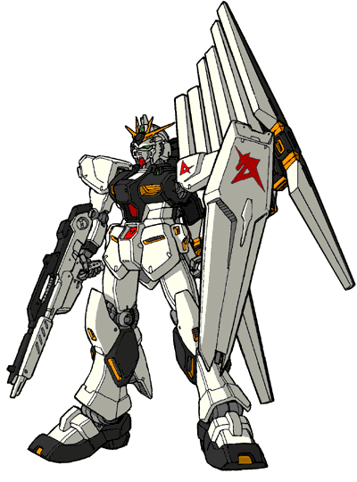
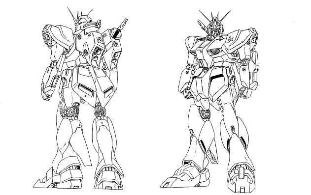
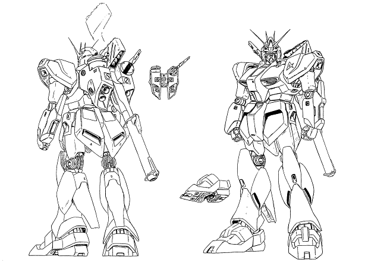
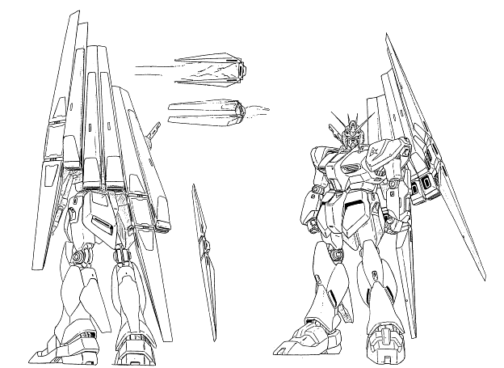
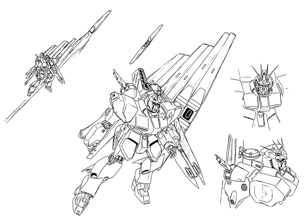
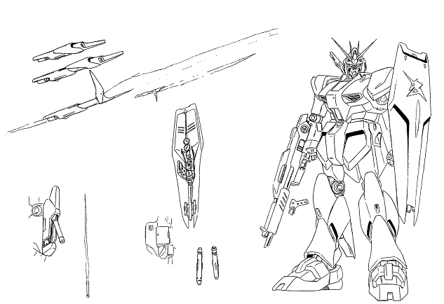
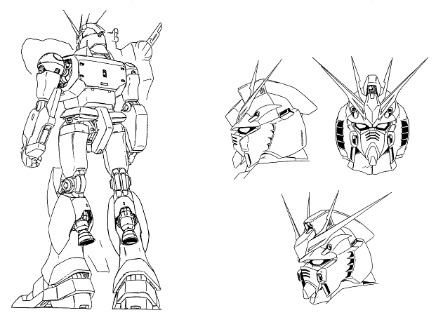
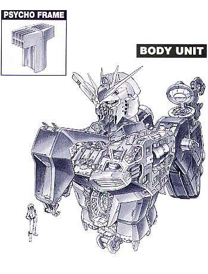
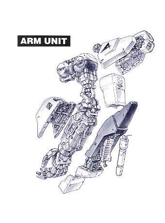
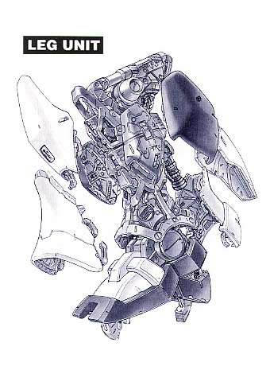
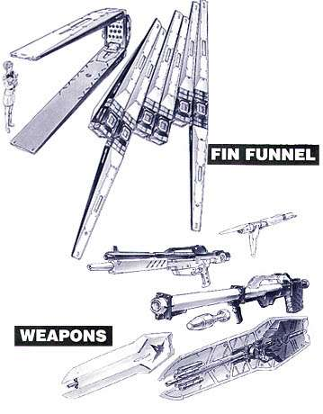
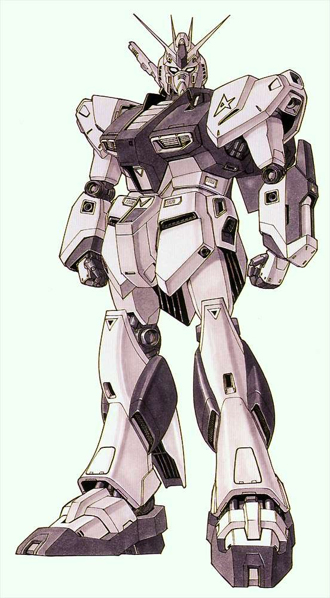
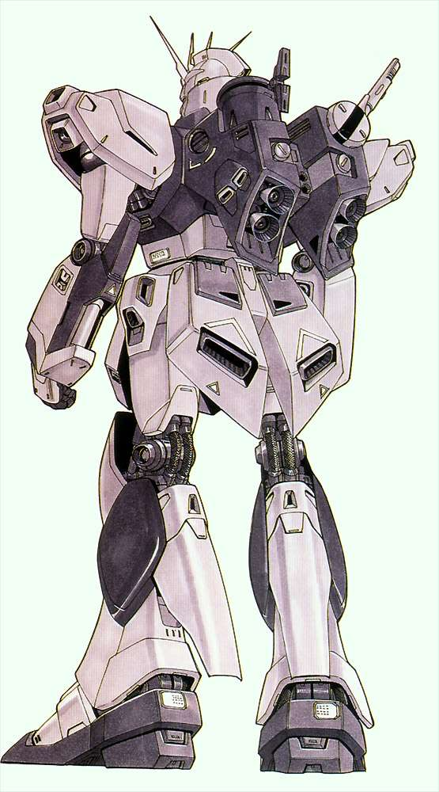
新吉翁篇：
RMS-116H 民用型高渣古
机动战士高达-逆袭的夏亚机体介绍 RMS-116H 民用型高渣古
简介
本机是以地球联邦军的RMS-106 高扎古为基础进行改修后得到的民用型MS。主要是取消了机体原有的全部武装，另外还施加了迷彩涂装。虽然没有武器，但本机的机动性、运动性均可以与军用机媲美。第二次新吉恩战争爆发之前，在隆德尼昂接应夏亚的邱尼·卡斯所驾驶的就是本机。
概要
机体番号： RMS-116H
机体代号(日文)： ホビー·ハイザック 英文： Hobby Hi-Zack 中文： 民用型高渣古
出现作品： 逆袭的夏亚
机体类型： 民用型MS
制造商： 阿克西斯
所属： 新吉恩
初次配备： U.C.0093
技术参数
内部环境： 标准式全视野监控
尺寸： 头顶高：18.50米
重量： 本体重量：35.40吨
装甲材料及结构： 钛合金（钛/陶瓷复合材料）
发电机出力：
推进力：
加速度： 1.09G
装备及设计特征：
固定武装：
选用武装：
选用手部武器：
远程武器：
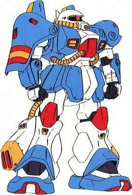
AMS-119 基拉·多加/居勒·得卡
简介
U.C.0093年，第二次新吉恩战争爆发。AMS-119 基拉·多加作为新吉恩军标准部队配置正式投入实战。其沿袭了吉恩系列MS泛用性能的优点，于战事中极为活跃。但从理论上，此机的出现比预期足足迟了五年之多。
其实早于U.C.0088年间，即第一次新吉恩战争后期，新吉恩（阿克西斯）已经开始研制此机。因为当时的新吉恩虽然拥有数量和种类繁多的MS，而且各种机型的战斗力都非常强大，但也因此暴露出在后勤操作上的种种问题，包括维修、补给、测试等。最直接的后果便是极大地加重新吉恩的财政负担。所以新吉恩开始以一年战争时期著名的MS-06系列作为基本模式，开发并量产比较高性价比的新型MS。
“控制成本——高性价比——泛用”这一构思便很符合新吉恩的未来要求，而要达到这个要求的机型，也只有吉恩的传统机体——扎古系列。一年战争中渣古系列的泛用作战能力是有目共睹的，以吉恩公国并不丰裕的资源条件能与联邦抗衡很大程度上就是拜扎古的高性能泛用作战能力所赐。
历经短暂休息后卷土重来的新吉恩（阿克西斯）所面对的仍然是一年战争时期的问题。在复兴初期新吉恩所开发生产的都是高火力的重型MS，而且这段时期MS的发展已经超越了MS本身的战斗用途，逐渐趋向战略化。财政支出已经是一个棘手的问题，而在实战研究中，盲目注重高火力对MS本身也存在巨大缺陷。所以调整发展战略、开发新型MS是非常有必要的。
基拉·多加的开发便是在这样的情况下被提出来。由于开发构思来自MS-06系列，自然便成为扎古系列的机型，而本身的架构则来自AMX-011 扎古Ⅲ。而在开发扎古Ⅲ时，繁重的装备已经令机体接近战的性能大幅下降，于是按照泛用要求的新方案，设计中几乎取消了所有的固定武器装备，改为在多个部位加上可分离的接合口，可以因作战环境和任务的不同而调整所携带的装备，成为一台真正泛用的全天候MS。这是与当时以高火力为主流的设计思路最大的区别。虽然将过于沉重的武器取消，但仍然保留了上身的重型装甲，以保证作战时的耐久力。但也可能是出于灵活性的考虑，腰部以下的装甲却削减至最少，裙板也重新修正。总体外型上接近与MS-06，但高度却增加了2米左右。可以说基拉·多加才是扎古Ⅱ到扎古Ⅲ的过渡。
不过开发计划还在草议阶段，新吉恩（阿克西斯）便因集团内讧而瓦解，大部分MS开发资料流失，而AMS-119却幸运地被核心组织的残余人员保留并与暗中活动的夏亚接触。后来夏亚正式成为新吉恩总帅后，秘密委托阿纳海姆电子公司继续进行开发。
在后续开发过程中，背部推进器也设计成可换式。通常的标准装备是宇宙用巡航型，这也是由夏亚所领导的新吉恩的短期作战战略所决定的。和以前的扎古一样， AMS-119也有指挥官型和普通型之分，但同样也只是区别在头部的装饰，其它的性能结构则完全一样，也有个别指挥官因个人喜好而换装颜色。虽然最后新吉恩决定将AMS-119量产成为部队标准配置，但由于此时的新吉恩财力更紧张，最后也是生产了80台左右，于第二次新吉恩战争中全数投入战场。
概要
机体番号： AMS-119
机体代号(日文)： ギラ·ド－ガ 英文： GEARA DOGA 中文： 基拉·多加/居勒·得卡
出现作品： 逆袭的夏亚
机体类型： 泛用量产型MS
制造商： 阿纳海姆电子公司
所属： 新吉恩
初次配备： U.C.0092
技术参数
内部环境： 标准式全视野监控
尺寸： 头顶高：20.00米
全高：20.00米
重量： 本体重量：23.00吨
全备重量：50.80吨
装甲材料及结构： 钛合金（钛/陶瓷复合材料）
发电机出力： 2160KW
推进力： 2×14000KG+2×13000KG=54000KG
姿势制御喷嘴数：15
加速度： 1.06G
装备及设计特征： 传感器探测有效半径：16400米
固定武装： 光束军刀/斧×1
选用武装： 手持式装甲护盾×1，于左臂携带；4连装榴弹发射器
选用手部武器： 光束机枪，可选择配备高热刺刀或小型榴弹炮1枚；手提护盾内藏携带式火箭炮4发
远程武器：
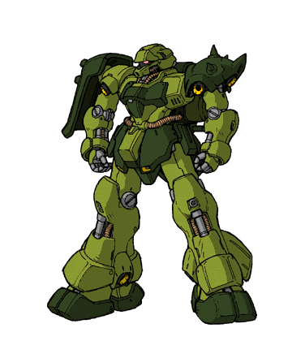
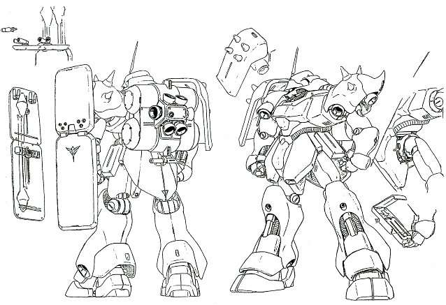
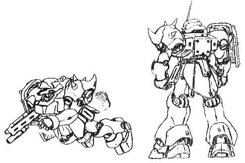
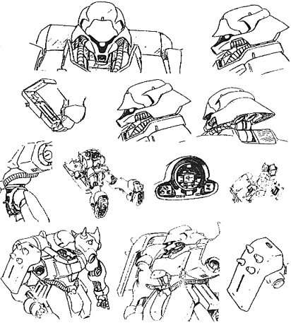
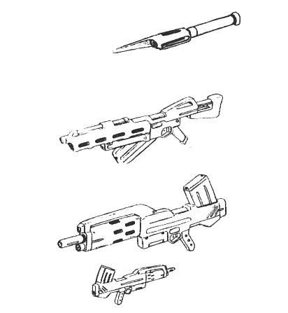
MSN-03 乍得·多加/乍得·德卡
简介
在第二次新吉恩战争期间投入使用的NT专用MS乍得·多加以其优秀的性能以及配合NT驾驶员的作战能力，使其战斗力一时无可匹敌。其中新吉恩的标志性武器——浮游炮则给人留下深刻的印象。而此机的前身却是作为当时新吉恩为增强战斗力而开发的AMS-119 基拉·多加后继机——AMS-120。
虽然在当时来说AMS-119是一种性能比较全面且合符新吉恩战略需要的机体，但毕竟是几年前的设计，整体作战水平与联邦军开始量产配备的RGM-89 杰刚相差无几，在战场上的优势并不明显。于是新吉恩开始考虑开发真正的新型MS。AMS-120便在这种情况下开始了试作计划。
AMS-120的开发初衷仍然是以高泛用性能为目的，不过由于作为泛用性机体的代表扎古系列的发展已经到达顶峰，很难再在性能上作出飞跃，加上AMS-119也可以暂时保持新吉恩的战力水平。于是AMS-120便放弃了以扎古作为基础，全新设计一款新型MS。
在装甲设计上，首次采用了硬度更高的高达尼姆合金作为材料，取代了常用的陶瓷合金；而在肩部则保留了扎古系列的肩盾设计。
武器方面则可谓非常丰富。首先不可不提的就是利用肩盾的空间设置了共6枚镶嵌式浮游炮。这种武器是由一年战争时期所使用的浮游圆锥炮的发展而来：固定时是一个圆筒的形状，在放出攻击时则后部的外壳会分为两半打开而露出主推进器，前方的小型粒子炮也会伸出机身。这种浮游炮比起当年甚至第一次新吉恩战争时期有着更高的活动能力和攻击力。之前的一系列实战试验已经证明了这种强力武器的性能，其操作系统塞可缪这时也发展到了一个完美阶段，因此使得这台机体可以拥有顶尖的作战能力。不过，浮游炮只是为了配合由新吉恩的作战总监娜娜伊所负责的新类型人研究计划而设置的，并非标准武器。这自然是因为拥有操作塞可缪系统能力的人选范围的局限性。
而开发人员所设计的其他标准武器也是非常强大而实用的。主力武器手提式光束步枪的枪身有一套多用途的发射器，可以将步枪从轻型到中型武器之间自由改动，本身还有5发榴弹炮。腰部设置了一支扩散粒子炮。左手腕则有一个外挂装置的接合点，可选择性地采用专用的武器盾。
早在第一次新吉恩战争时期，MS的设计比较注重盾的使用效率。而有效地利用盾的空间的方法便是在盾上装置或携带武器。当时便在AMX-103身上开发出盾置式MEGA粒子炮。也由于技术的发展，这时已经可以装置到4枚之多。
新吉恩在完成设计草案后秘密委托阿纳海姆电子公司去完成测试和量产的计划。但不巧的是，因为新吉恩在战略上的调整，开始进行拥有强大攻击力的机体—— α·瓦索龙的开发，因而导致财政资金的紧张，无奈之下只能终止AMS-120的开发。这时阿纳海姆方面已经生产了两台还未作测试的原型机。在夏亚以私人身份委托下，阿纳海姆开始对两台原型机进行改装。夏亚要求改装的目的是将两台新型机作为NT专用机体，因为由娜娜伊所负责的新类型人研究计划已经培养出能力非常优秀的高素质驾驶员。当然，这也由于夏亚一向所崇尚的是以精锐力量为主的作战部队战略。所以，浮游炮终于成为了标准装备。
在外型上，基本是以原来的为基础加以修改，例如肩盾稍微扩大增加强度，关节等薄弱的地方也得到巩固。而之前因为某些原因的需要，背部推进系统的位置布局曾作出了很大的修改，后来在改装时也没有改回来，因此背部主引擎的外型与以前的MS有很大的区别。
另外，对于机体武器也作出了修改：浮游炮改为吊挂式；腰部的扩散粒子炮也因为浮游炮成为标准装备而取消了，换回了防御装甲；光束步枪改为附带一发榴弹的轻型组合，另外也设计了格林式机关枪可供选择用。而盾则作出了大幅度的变化，之前的设计已经是将盾变成一个手提式的武器组，从而令重量大为增加。所以在精简重量之余，连早期设计在盾的周围安置的三个有线式导向攻击炮“INCOM”也因这个原因以及塞可缪系统的确定而取消。
这样，两台原型机的改装基本完成了，涂装方面是一台蓝绿色和一台红色。其中蓝绿色的一台带有尖角装饰，这是因为设计初衷是成为指挥官样式的。夏亚也将两台机的编号改为MSN-03，命名为JAGD DOGA。
在投入实战后，蓝绿色的一台被分配给由娜娜伊所培养的强化人驾驶员邱尼所驾驶，在阿克西斯坠落作战中被阿姆罗击毁；红色的一台则由后来加入的新类型人少女珂丝所驾驶，因在作战中受重创，珂丝也换乘别的机体出战而遭遗弃（有另一个版本的小说情节是蓝绿色机在月神五号坠落作战中被阿姆罗捕获，邱尼换乘红色机于阿克西斯坠落作战中被利·卡兹击坠）。可以说两机都不多不少地继承了NT专用机体的悲哀命运。
概要
机体番号： MSN-03
机体代号(日文)： ヤクト·ド－ガ 英文： JAGD DOGA 中文： 乍得·多加/乍得·德卡
出现作品： 逆袭的夏亚
机体类型： NT专用试验型MS
制造商： 阿纳海姆电子公司
所属： 新吉恩
初次配备： U.C.0093
技术参数
内部环境： 全视野监控
尺寸： 头顶高：21.00米
重量： 本体重量：28.00吨
全备重量：64.60吨
装甲材料及结构： 高达尼姆合金（gundarium alloy）
发电机出力： 3340KW
推进力： 2×17000KG+2×13000KG+2×11000KG=82000KG
姿势制御喷嘴数：17
加速度： 1.27G
装备及设计特征： 传感器探测有效半径：20500米；搭载塞可缪感应系统
固定武装： 光束军刀×1，收于侧裙甲；导向飞弹×6，藏于两肩护甲内
选用武装： 光束步枪，附带一发式榴弹发射器；格林式光束机关枪；手持式装甲护盾×1，于左臂携带
选用手部武器： 4连装MEGA粒子炮，置于手持式装甲护盾上，额定输出功率各9.3MW
远程武器： 浮游炮×6，分置于两肩护甲外
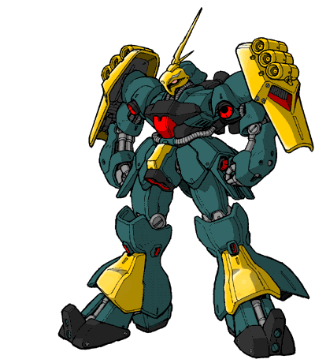
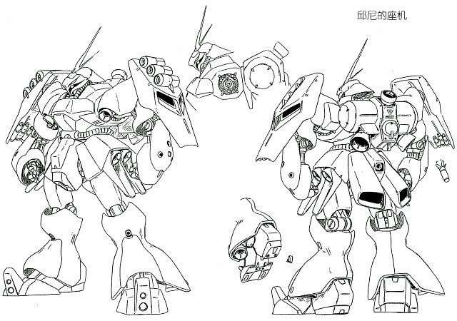
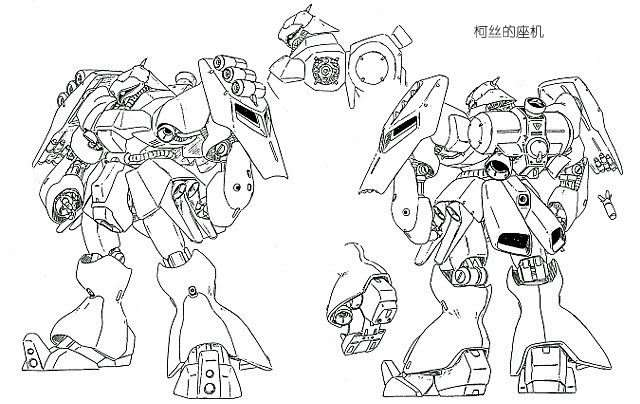
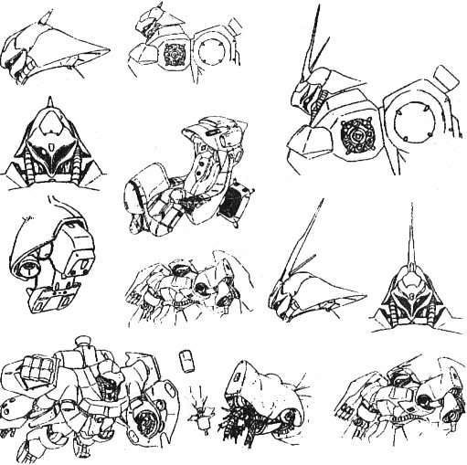
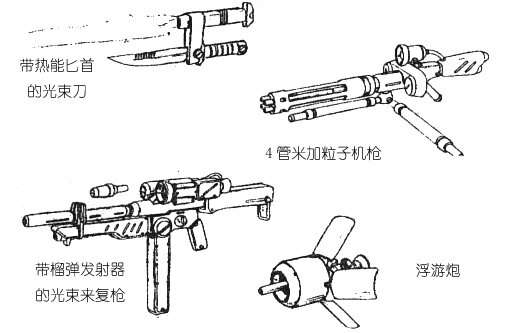
MSN-04 沙扎比
简介
U.C.0093年初，当阿纳海姆电子公司为正在秘密策划战争的新吉恩完成了一批量产型MS和两台试作型MS后，也收到了另外一份出人意料的定单——为新吉恩开发一台全新的MS，而开发这台MS的委托者以及未来的驾驶者不是别人，正是新吉恩总帅——夏亚。
在作为主力配置的AMS-119以及试作型的MSN-03完成后，新吉恩的计划也到了蓄势待发的阶段。一向习惯于驰骋于战场第一线的夏亚也心感需要一台坐机令自己能再次披挂上阵。虽然之前作为新类型人专用的试作型MS——MSN-03 乍得·多加在完成后显示出优秀的作战性能，但夏亚并不满足，因为在技术或能力上，以MSN-03的基础还有更大的上升空间，于是便下令继续研制新型的专用 MS——MSN-04 沙扎比。
沙扎比无论从设计到制造、武器配置到操控系统都应用了当时最顶尖的技术。基本上是按照MSN-03的结构为蓝本，也是作为NT专用的MS以配合驾驶员的优秀能力，但加入了更多的辅助要素：为了达到高强的战斗力，机体各部分都得到完全的强化，推进出力也大幅度提升，调节喷嘴也增多以便增强机体运动性。但一系列的附加装置令空间使用成为一大难题，不得已惟有扩大机体的体积，令机体达到近25米之巨，这对于一般的MS来说是无法想象的。不过高火力、高运动性这一特点早在第一次新吉恩战争时就已经体现出来了，但也是由于极端地注重火力强大而忽略了机体本身的活动和承受能力使得当时近百种试验机大部分沦为垃圾。幸而工程人员也从中吸取了教训，在提高火力之余也考虑到机体动力输出的极限，适度追求火力和运动性兼顾而不是盲目提高。因此虽然以沙扎比的巨大体积却丝毫不影响其高超的运动性能，而且在战场上反而更能体现出机体的强大。另外，工程人员也设计了外接式的推进器以弥补机动力上的不足。
沙扎比的其中一个主力武器是安装于腹部前方的高能MEGA粒子炮，设计时因为机体安装了高出力的动力炉，预计大部分能量都供应给这门粒子炮。这种设计其实和早年ZZ高达的高能重加农炮是一样的，但由于ZZ高达在使用这种武器时所出现的巨大问题以及之后也没有继续改进，所以设计者对此缺乏信心，最后这门粒子炮并未完成，只是降低了能量输出，作为普通的粒子炮使用，但其范围型的攻击属性在战斗中也起到一定的作用。
手部主要武器则是之前设计于MSN-03使用但因动力问题而取消的光束步枪，与其他同类型光束枪相比最大的区别是并没有附加武器，而是枪身前端安装了可变结构，可以自由变换成扩散粒子炮。因为沙扎比拥有较高的动力输出，所以使用这支枪也自然适合。同时也一样设计了手提式护盾，内藏三枚小型飞弹和一把光束战斧。
同样地，沙扎比也安装了塞可缪感应装置以及六枚放置在背部推进器之上的浮游感应炮。基本上这些浮游炮和MSN-03上安置的是同一类型。不过，与之前的NT专用MS相比，沙扎比身上多出了一样革命性设计——精神感应框架（psycoframe）。这其实是最早由夏亚所提出以塞可缪感应系统结合阿纳海姆电子公司研制的生化感应系统（BIO-SYSTEM）而成的。其主要特点是利用了全天周球形驾驶舱的特性，在周围显示器上装置了无数细小的塞可缪系统接收器，使驾驶员的脑电波直接与机体中的生化电脑连接，从而使机体行动达到与驾驶员所发出的指令同步敏捷的效果。因此整个系统已经不再局限于控制武器，甚至能将机体大部分机能转化为智能模式，极大地提升了机体的性能。
但令人费解的是，在夏亚的暗示下，如此尖端的技术居然“泄露”给当时也正在阿纳海姆的阿姆罗（另一个版本的小说情节是在月神五号坠落作战中，夏亚故意令邱尼的乍得·多加被阿姆罗捕获，从而令阿姆罗掌握精神感应框架技术）使其能应用在自己所设计的新型MS——ν高达身上。姑且勿论夏亚故意泄露秘密的目的，但是精神感应系统的提出已经使阿纳海姆获得了由吉恩掌握了多年专利的塞可缪核心技术，本来无奈之下欲以取代塞可缪的生化电脑系统也得到了极大的进展，直接对日后机体和武器的开发产生了深远的影响。
沙扎比终于赶及在第二次新吉恩战争打响时投入战场，配合“赤色彗星”夏亚高超的驾驶技术，在战斗中发挥出惊人的战斗力。不久后，他永远的对手阿姆罗的ν 高达也终于登场。虽然在无论在机体性能上或是在实战交锋中，沙扎比都占尽优势，但最终却仍然败在阿姆罗手上，不能不令人惋惜：无论夏亚也好，沙扎比也好，都逃不出“宿敌始终要败在主角手上”的宿命。
概要
机体番号： MSN-04
机体代号(日文)： サザビ－ 英文： SAZABI 中文： 沙扎比
出现作品： 逆袭的夏亚
机体类型： NT专用试作型重MS
制造商： 阿纳海姆电子公司
所属： 新吉恩
初次配备： U.C.0093
技术参数
内部环境： 全视野监控
尺寸： 头顶高：23.00米
全高：25.60米
重量： 本体重量：30.50吨
全备重量：71.20吨
装甲材料及结构： 高达尼姆合金（gundarium alloy）
发电机出力： 3960KW
推进力： 2×14000KG+2×13300KG+8×9800KG=133000KG
姿势制御喷嘴数：28
加速度： 1.87G
装备及设计特征： 传感器有效探测半径：22600米；搭载塞可缪感应系统（psycommu system）；精神感应框架（psycoframe）；背部外接推进器×2
固定武装： MEGA粒子炮×1，额定输出功率8.8MW，置于腰部前方；光束军刀×2，收于两手前臂装甲内
选用武装： 手持式装甲护盾×1；护盾内置小型飞弹×3
选用手部武器： 光束步枪×1，额定输出功率10.2MW；光束战斧×1，藏于手持护盾内
远程武器： 浮游感应炮×6（额定输出功率各10.6MW），置于背部上方
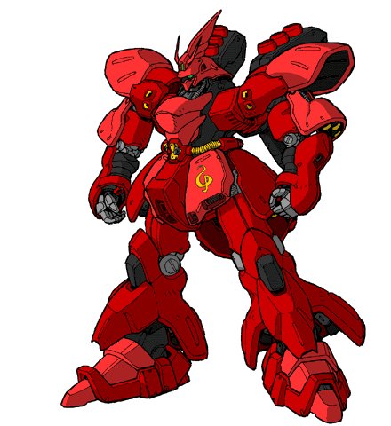
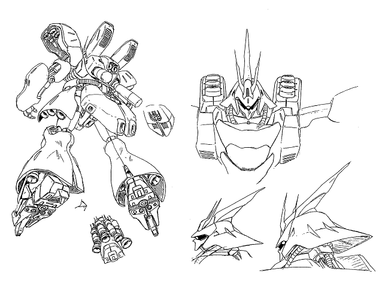
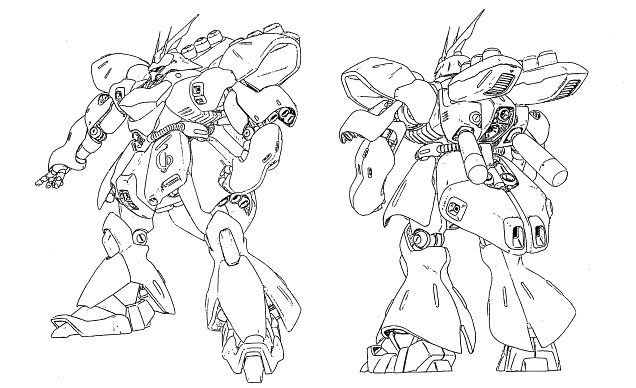
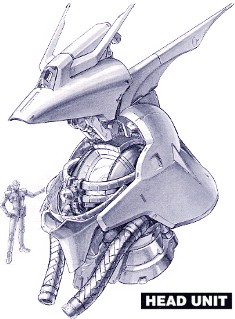
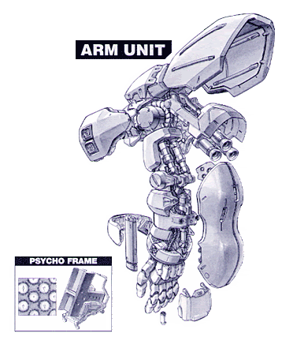
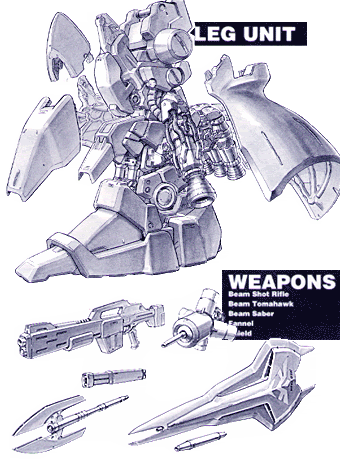
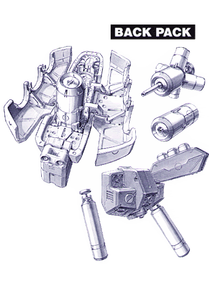
NZ-333 α·瓦索龙
简介
本机是第二次新吉恩战争时期新吉恩军所开发的NT专用超大型试作MA，全装备时机体全长超过100米。NZ-333的设计理念继承了一年战争时期的 MSN-02 吉恩号，另外还参考了MAN-08及AMX-004等几乎全部的搭载塞可缪系统的机体。NZ-333机体的操作及武器的控制全部均由塞可缪系统来进行；设计人员用大型推进器代替了机体的脚部，内部装有燃料槽，燃料使用完了之后可以切离本体，使得本机具有超越MS的运动性。本机原本是预定作为对舰用MA投入实战的，主要武装有：浮游感应炮、头部有线式2连装火神炮、头部MEGA粒子炮及有线式塞可缪控制机械臂；另外还装备了I FIELD发生器，使机体不仅具有惊人的火力，防御力也丝毫不逊色。第二次新吉恩战争时期，新人类少女珂丝·帕拉雅驾驶本机投入了对朗德·贝尔队的实战，但最终被击坠。
概要
机体番号： NZ-333
机体代号(日文)： α·アジ－ル 英文： Alpha Azieru 中文： α·瓦索龙
出现作品： 逆袭的夏亚
机体类型： NT专用试作型MA
制造商： 阿克西斯
所属： 新吉恩
初次配备： U.C.0093
技术参数
内部环境： 标准式全视野监控
尺寸： 头顶高：58.4米
全高：108.26米
重量： 本体重量：128.6吨
全备重量：267.4吨
装甲材料及结构： 高达尼姆合金可变式框架
发电机出力： 19830KW
推进力： 1×933500KG+2×468000KG+4×87000KG=10617500KG
姿势制御喷嘴数：31
加速度： 8.29G
装备及设计特征： 传感器探测有效半径：23800米；搭载塞可缪系统；外部火箭推进器×2
固定武装： 头部有线式2连装火神炮×2；头部MEGA粒子炮×1，额定输出功率19.5MW；有线式塞可缪控制机械臂×2，各装备小型粒子炮×5（额定输出功率12.6MW）；I FIELD发生器×1
选用武装：
选用手部武器：
远程武器： 浮游感应炮×9，额定输出功率20.4MW
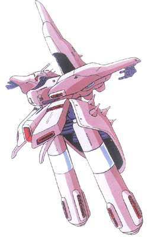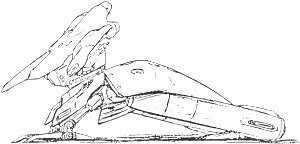
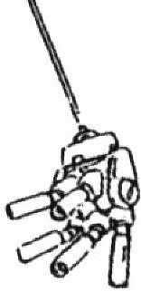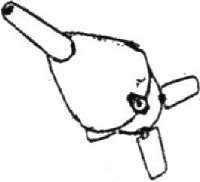